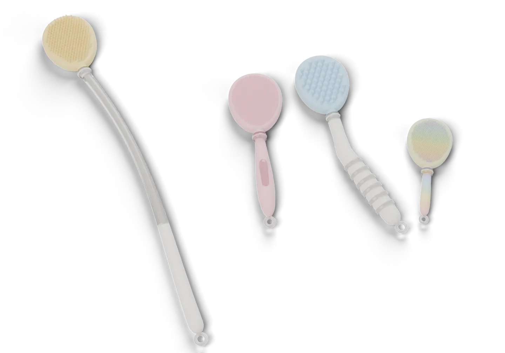
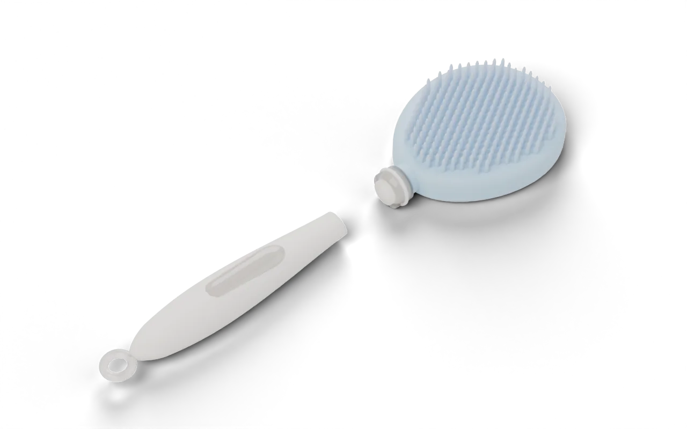
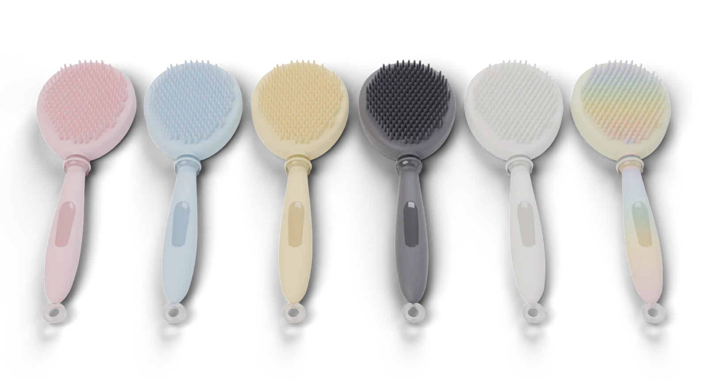
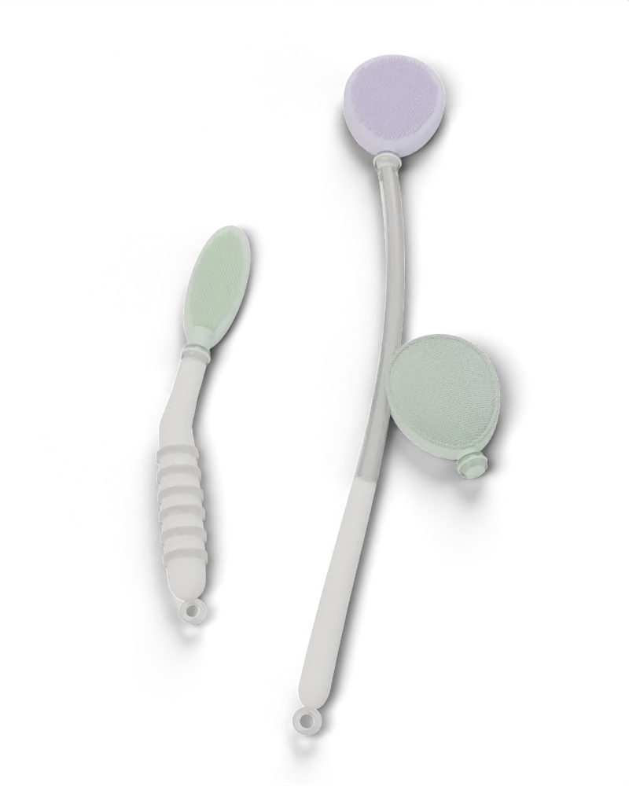
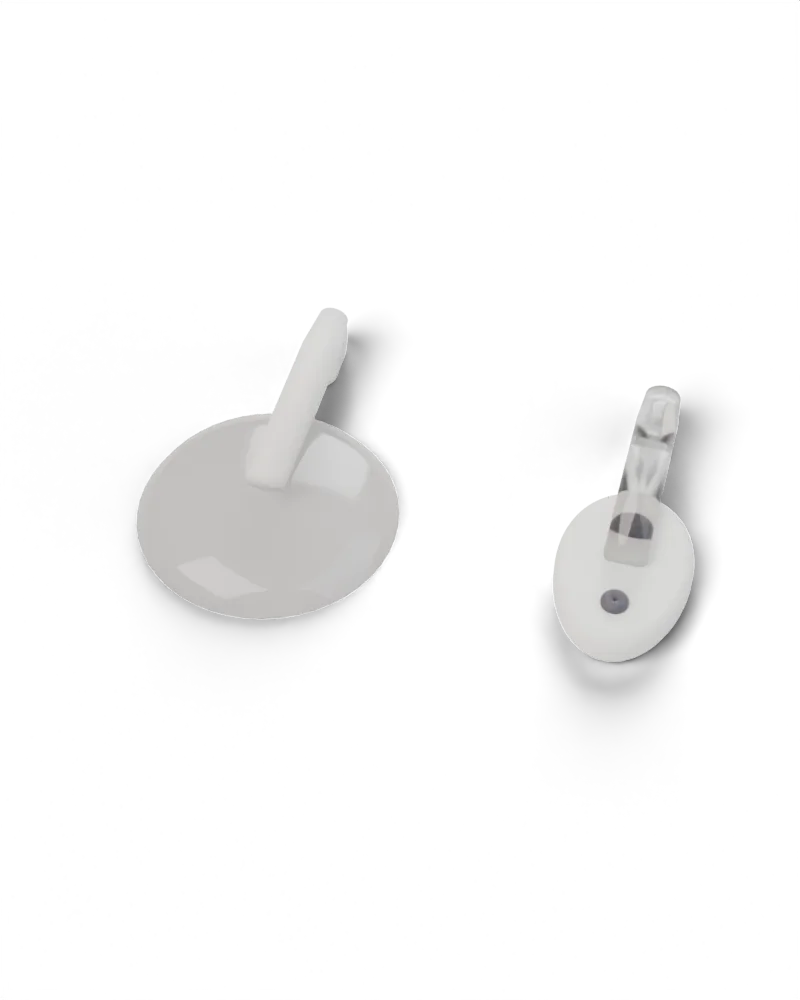

Scrubmello / Bath & body tools / Launching soon
Scrub, mellow.

One handle.
Every head.
Every body.
Slim soft-touch handles, under an inch wide, with clear frosted details. Click on a head for body, back, face or scalp, then hang it up to dry.
Discover the system ↓We think scrubbing should feel calm. Not cheap, not precious. Just well made, easy to keep clean, and designed so one handle can do everything, for everyone in the house.

The Mello Click system
Pick a handle
Pebble for the palm, Reach for your back, Easy Grip for weaker hands, Mini for kids. All of them slim, soft and light.
Click on a head
Push and quarter-turn. The clear collar locks with a soft click. Eight heads, one egg shape, any handle.
Hang it up
Every handle ends in a clear hang loop. Every pack has a suction hook for tiles and a screw-in hook for walls.
Replace the head, keep the handle
Heads wear out, handles don't. A new head costs less than a new scrubber and keeps plastic out of the bin.
01 Handles
Slim, soft, see-through in places.
02 Heads
One shape. Eight textures.
03 Colours
Soft colours, mixed your way.


04 Made for every body
Easy care, built in.
The Easy Grip is thick where it matters and angled so wrists stay straight. Clear rings give a soft, non-slip hold. The Reach Handle gets to backs and feet without stretching, and the slim Crease Head gets gently between skin folds.
- GripUp to 25mm, soft clear rings
- Reach400mm, gentle curve
- FoldsSlim, flexible 38mm head
- HygieneColour-coded heads per person
05 Sets
Ready to go.
06 In every pack
Two ways to hang.
A clear suction hook for tiles and glass, and a screw-in hook for walls that won't hold suction. Use whichever suits your bathroom.

07 Materials
What it's made of.
- HandlesSoft-touch silicone over a rigid core
- Clear partsFrosted see-through silicone
- HeadsSilicone, with mesh and fabric options
- CleaningRinse, hang, dry. Silicone heads are top-rack dishwasher safe
- FitEvery head fits every handle
08 Questions
Good to know.
Do all heads fit all handles?
Yes. Every Scrubmello handle and head uses the same Mello Click collar.
How do I clean it?
Rinse with warm water and hang it up to dry. Silicone heads can go on the dishwasher top rack and the Cloth head can go in the washing machine.
How often should I change the head?
Silicone heads last a long time. Mesh and Cloth heads are best replaced every few months.
When can I buy?
We are launching soon. Join the list and you will hear first.
Launch list